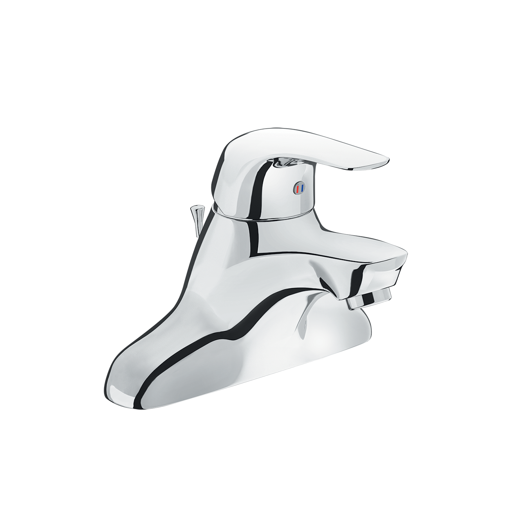
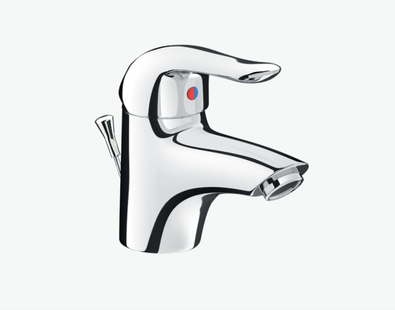
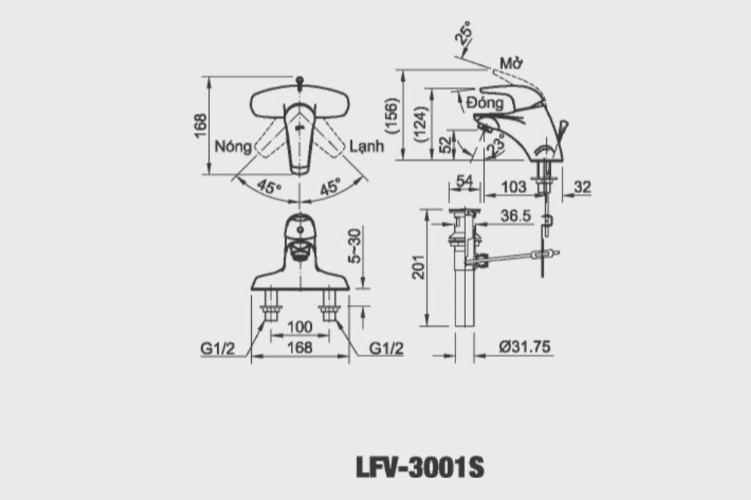

Sen vòi đơn LFV-3001S là sự kết hợp hoàn hảo giữa phong cách cổ điển tinh tế và công nghệ hiện đại, được thiết kế đặc biệt cho các mẫu chậu lavabo kiểu 3 lỗ (EC) truyền thống. Sản phẩm không chỉ là thiết bị tiện ích mà còn là điểm nhấn thẩm mỹ, nâng tầm sự sang trọng và đẳng cấp cho không gian phòng tắm của bạn.Thiết kế LFV-3001S mang nét đẹp hài hòa vượt thời gianKiểu dáng đế rộng, liền khối: Thiết kế đặc trưng dành cho chậu 3 lỗ, tạo cảm giác vững chãi, bề thế và che đi các lỗ lắp đặt một cách khéo léo, mang lại vẻ đẹp liền mạch cho tổng thể.Đường cong mềm mại: Thân vòi lavabo và cần gạt được tạo hình bằng những đường cong uyển chuyển, tạo nên sự thanh lịch và thân thiện với người dùng, đồng thời dễ dàng hòa hợp với nhiều phong cách nội thất.Tay gạt tiện dụng: Cần gạt nước được bố trí gọn gàng, cho phép người dùng dễ dàng điều chỉnh cả nhiệt độ và lưu lượng nước một cách chính xác và nhẹ nhàng.Bề mặt bóng loáng: Sản phẩm sở hữu lớp mạ Crôm/Niken cao cấp, mang lại bề mặt sáng bóng như gương, giúp phản chiếu ánh sáng, làm không gian phòng tắm thêm lấp lánh và sạch sẽ.Công nghệ và độ bền đạt chuẩn quốc tế của LFV-3001SVan sứ (Ceramic) chống rò rỉ tuyệt đốiVòi LFV-3001S được trang bị van điều khiển bằng sứ chất lượng cao. Loại van này nổi tiếng với độ bền vượt trội và khả năng chống mài mòn, giúp khóa nước tuyệt đối và đảm bảo vòi hoạt động êm ái, bền bỉ trong nhiều năm.Chất liệu cao cấpVòi được sản xuất từ chất liệu đồng thau chủ đạo, bên ngoài phủ lớp mạ Crôm/Niken (Cr/Ni) chất lượng cao.Lớp mạ này không chỉ đẹp mà còn có tác dụng chống oxy hóa, chống ăn mòn hiệu quả, duy trì độ sáng bóng lâu dài và dễ dàng vệ sinh.Đảm bảo chất lượng theo tiêu chuẩn quốc tếKết cấu bên trong vững vàng đảm bảo độ ổn định và an toàn khi sử dụng.Sản phẩm đạt các chứng nhận nghiêm ngặt về chất lượng và môi trường: ISO-9001 (Quản lý chất lượng) và ISO-14001 (Quản lý môi trường), khẳng định cam kết về chất lượng của thương hiệu INAX.Video giới thiệu vòi chậu INAXBản vẽ sen vòi đơn LFV-3001SThông số kỹ thuậtChất liệuĐồng thau mạ Crom-NikenLoạiVòi nước nóng lạnhKích thước-Thiết kế- Tay gạt dẹt - Thân vòi nguyên khối, chống oxy hóa - Dùng cho chậu 3 lỗThương hiệuINAXTính năng- Van Ceramic với độ bền cao - Van sứ có khả năng chịu nhiệt và chịu áp lực tốt - Áp lực nước cao: 0.05 - 0.75 MPa - Kết cấu vững vàng, chống bám bẩn, dễ vệ sinhMàu sắc-KhácHotline tư vấn và bảo hành: 18006633
Sen vòi đơn LFV-3001S
Vòi chậu thương hiệu INAX.
Đã cập nhật danh sách yêu thích.
DANH MỤC: Vòi chậu
MÃ SẢN PHẨM: LFV-3001S
DEPTH: mm
HEIGHT: mm
WIDTH: mm
Sen vòi đơn LFV-3001S là sự kết hợp hoàn hảo giữa phong cách cổ điển tinh tế và công nghệ hiện đại, được thiết kế đặc biệt cho các mẫu chậu lavabo kiểu 3 lỗ (EC) truyền thống. Sản phẩm không chỉ là thiết bị tiện ích mà còn là điểm nhấn thẩm mỹ, nâng tầm sự sang trọng và đẳng cấp cho không gian phòng tắm của bạn.Thiết kế LFV-3001S mang nét đẹp hài hòa vượt thời gianKiểu dáng đế rộng, liền khối: Thiết kế đặc trưng dành cho chậu 3 lỗ, tạo cảm giác vững chãi, bề thế và che đi các lỗ lắp đặt một cách khéo léo, mang lại vẻ đẹp liền mạch cho tổng thể.Đường cong mềm mại: Thân vòi lavabo và cần gạt được tạo hình bằng những đường cong uyển chuyển, tạo nên sự thanh lịch và thân thiện với người dùng, đồng thời dễ dàng hòa hợp với nhiều phong cách nội thất.Tay gạt tiện dụng: Cần gạt nước được bố trí gọn gàng, cho phép người dùng dễ dàng điều chỉnh cả nhiệt độ và lưu lượng nước một cách chính xác và nhẹ nhàng.Bề mặt bóng loáng: Sản phẩm sở hữu lớp mạ Crôm/Niken cao cấp, mang lại bề mặt sáng bóng như gương, giúp phản chiếu ánh sáng, làm không gian phòng tắm thêm lấp lánh và sạch sẽ.Công nghệ và độ bền đạt chuẩn quốc tế của LFV-3001SVan sứ (Ceramic) chống rò rỉ tuyệt đốiVòi LFV-3001S được trang bị van điều khiển bằng sứ chất lượng cao. Loại van này nổi tiếng với độ bền vượt trội và khả năng chống mài mòn, giúp khóa nước tuyệt đối và đảm bảo vòi hoạt động êm ái, bền bỉ trong nhiều năm.Chất liệu cao cấpVòi được sản xuất từ chất liệu đồng thau chủ đạo, bên ngoài phủ lớp mạ Crôm/Niken (Cr/Ni) chất lượng cao.Lớp mạ này không chỉ đẹp mà còn có tác dụng chống oxy hóa, chống ăn mòn hiệu quả, duy trì độ sáng bóng lâu dài và dễ dàng vệ sinh.Đảm bảo chất lượng theo tiêu chuẩn quốc tếKết cấu bên trong vững vàng đảm bảo độ ổn định và an toàn khi sử dụng.Sản phẩm đạt các chứng nhận nghiêm ngặt về chất lượng và môi trường: ISO-9001 (Quản lý chất lượng) và ISO-14001 (Quản lý môi trường), khẳng định cam kết về chất lượng của thương hiệu INAX.Video giới thiệu vòi chậu INAXBản vẽ sen vòi đơn LFV-3001SThông số kỹ thuậtChất liệuĐồng thau mạ Crom-NikenLoạiVòi nước nóng lạnhKích thước-Thiết kế- Tay gạt dẹt - Thân vòi nguyên khối, chống oxy hóa - Dùng cho chậu 3 lỗThương hiệuINAXTính năng- Van Ceramic với độ bền cao - Van sứ có khả năng chịu nhiệt và chịu áp lực tốt - Áp lực nước cao: 0.05 - 0.75 MPa - Kết cấu vững vàng, chống bám bẩn, dễ vệ sinhMàu sắc-KhácHotline tư vấn và bảo hành: 18006633
DANH MỤC: Vòi chậu
MÃ SẢN PHẨM: LFV-3001S
DEPTH: mm
HEIGHT: mm
WIDTH: mm